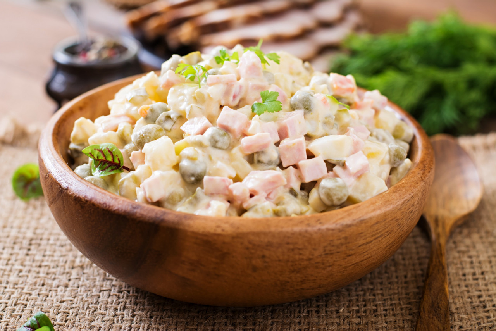

Rasols recipe

Description
Rasols, also known as Russian Potato Salad or Olivier Salad, is a popular and hearty salad in Eastern European cuisine, especially in Russia and Latvia. It's a flavorful combination of boiled potatoes, vegetables, and meats, often enjoyed during holidays and special occasions. Rasols is a versatile dish, and you can adjust the ingredients and dressing to suit your preferences. It's a hearty, satisfying salad that's perfect for gatherings or as a comforting dish to enjoy with family and friends. Here's how you can make Rasols:
Ingredients
- 4 large potatoes, boiled and peeled
- 4 large eggs, hard-boiled
- 2 large dill pickles, diced
- 1 cup diced sausage, salami, ham
- 1 cup canned green peas
- 1 cup mayonnaise
- 2 tablespoons Russian mustard
- 2 tablespoons horseradish
- 1 cup sour cream
- Salt to taste
- Fresh dill, for garnish (optional)
Steps
- Prepare the Ingredients: start by boiling the potatoes and eggs. Once they're cooked, peel and dice them into bite-sized pieces. Also, dice the pickles and meats.
- Drain peas.
- Combine Ingredients: in a large mixing bowl, combine the diced potatoes, eggs, pickles, meat, peas.
- Prepare Dressing: in a separate bowl, mix the mayonnaise, sour cream, horseredish and mustard until well combined. Add salt to taste.
- Toss with Dressing: pour the dressing over the potato mixture and gently toss until all ingredients are well coated.
- Chill: cover the salad and refrigerate for at least 2-3 hours, or overnight if possible. This allows the flavors to meld together.
- Garnish and Serve: before serving, garnish the Rasols with fresh dill (if using).